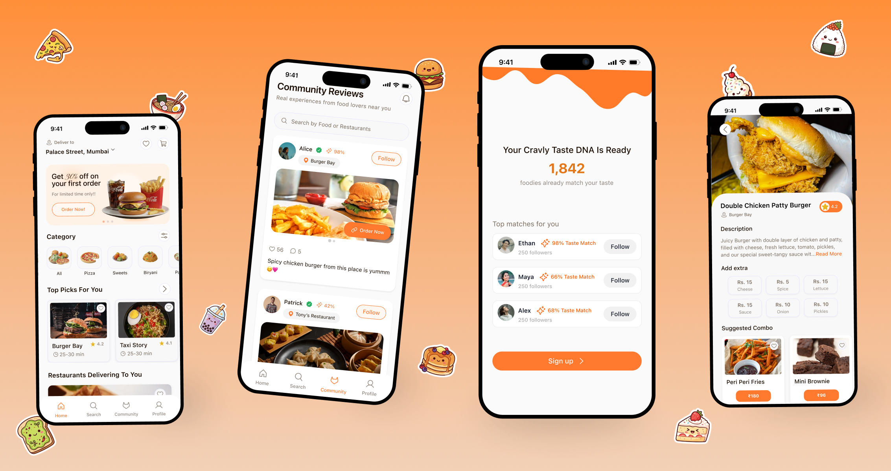
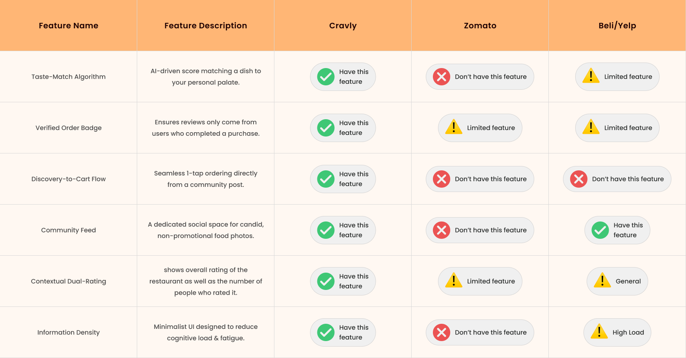
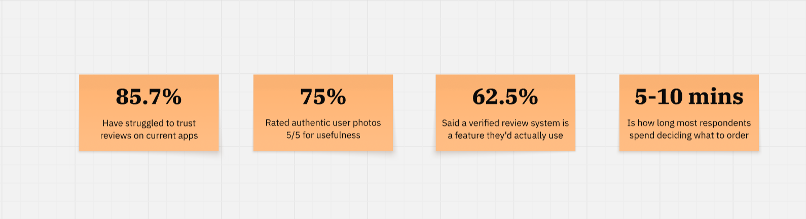
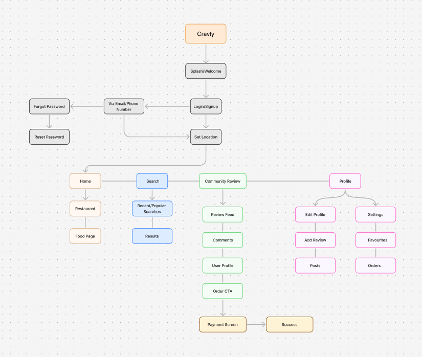
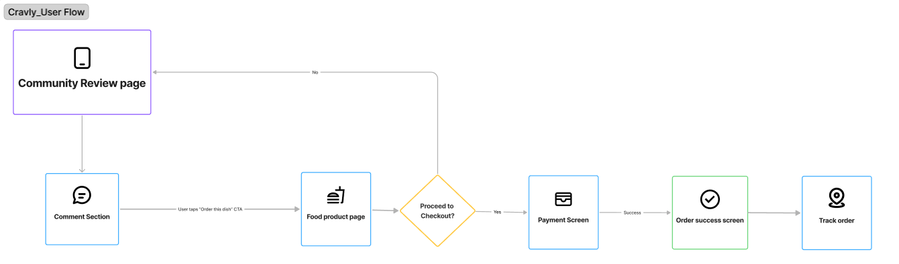
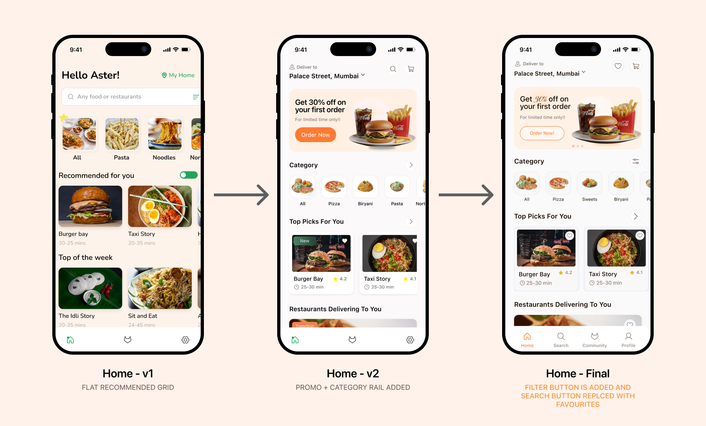
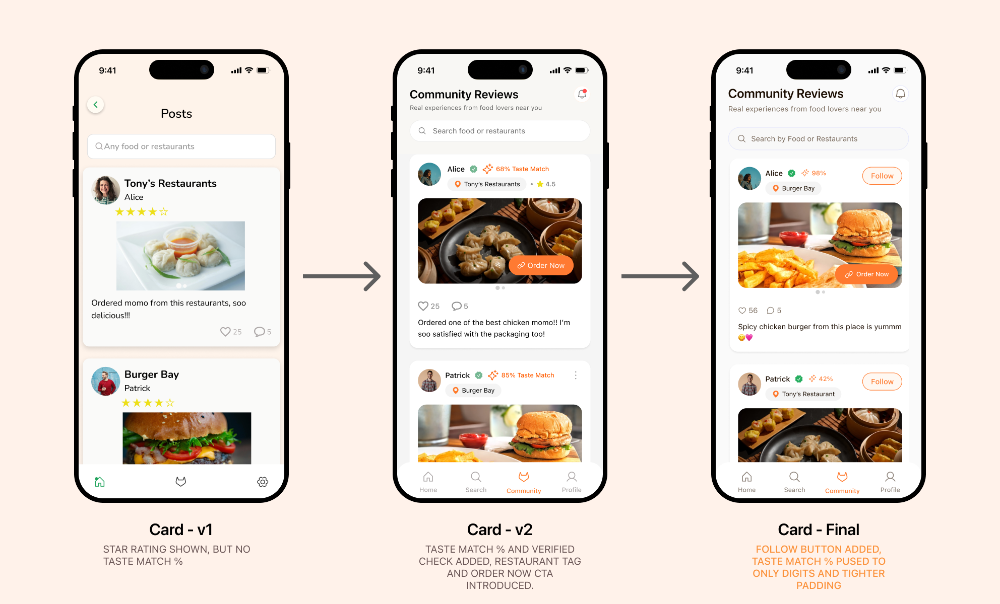
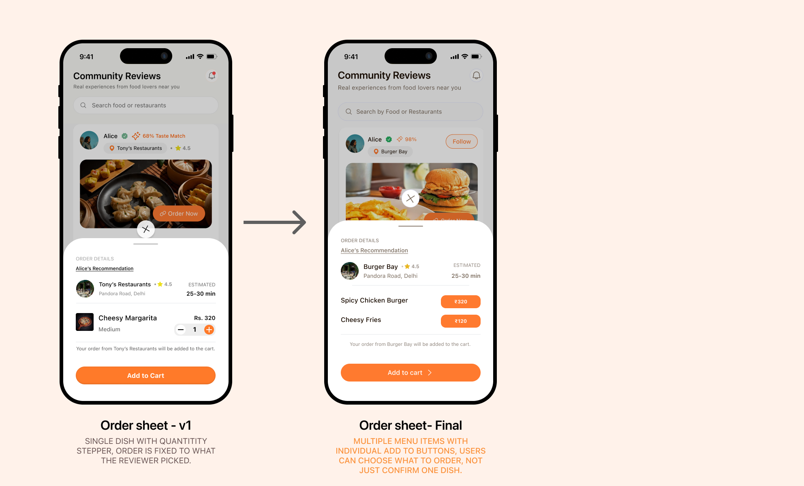
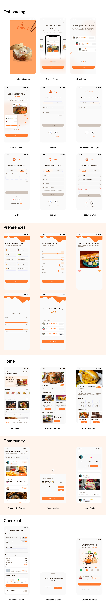

A community-powered food discovery app that helps people decide what's actually worth ordering, comes with real recommendations from people you trust, with taste-matched to you and just one tap order.

Cravly is built on a simple bet: people don't need more restaurant options, they need a better reason to trust one. It combines genuine community recommendations with taste-based matching and one-tap ordering, so the gap between "that looks good" and "I'll order that" disappears. No detour through search.
As the sole UX/UI designer on this project, I was responsible for end-to-end design: research, ideation, information architecture, wireframing, prototyping, and usability testing. This was a personal project completed over 6 weeks.
Every food app makes the final step easy. The harder part happens before that: deciding what is actually worth ordering. People compare ratings, photos, reviews, and restaurant listings, but still have to answer one question: "Will I actually like this?"
The problem wasn't a lack of options. It was a lack of confidence in the choice.
The research pointed to something more interesting than "reviews aren't trustworthy." People already turn to friends, creators, and other diners when they want to know what is actually worth trying. The value isn't just in the recommendation itself, it's in who made it, what they ate, and whether their taste aligns with yours.


Users struggled to judge whether restaurant reviews were genuine and useful for their own decision.
Real picture of the food 🥺
Verification badge for real/good restaurants (not bought)
Honest reviews
Authentic photos from real users were the highest-rated feature in the survey, with 75% rating them 5/5 for usefulness.
Users wanted information they could believe, not simply more information.
That made one thing clear: once intent forms, the product shouldn't make users start the search again.
Star ratings tell you what the crowd thinks. Cravly asks a more useful question: how likely are you specifically to enjoy this dish?
During onboarding, users share a few quick preferences so Cravly can understand the kind of food they tend to enjoy.
Cravly compares Taste DNA profiles to find reviewers whose preferences genuinely line up with yours.
A Taste Match score sits on every review, so a recommendation from an 85% match carries more weight than a five-star rating from a stranger.
I kept the IA deliberately flat: four top-level areas, each with a clear job. The goal was to make the app easy to orient around without burying discovery, ordering, or profile management behind layers of navigation.
Community became the core discovery surface, with the path from review → context → order reflected directly in the architecture. Location is established early so the content users see is immediately relevant.

Cravly's core flow starts with a community post, not a search query. The challenge was keeping the context that created the craving intact all the way to checkout.
A few decisions I landed on:
Preserve intent: The "Order Now" CTA appears directly within the review experience, right where the craving hits. So users don't have to search for something they've already decided they want.
Keep the path connected: Community → Food detail → Order → Checkout
Each step answers the next question without making the user restart the journey.
Get out of the way: Once the order is placed, the experience becomes quieter: confirmation and tracking replace discovery.

The user never has to reconstruct the decision that got them there.
I began with paper sketches to explore layout options quickly, then moved to Figma for mid-fidelity wireframes, structure and hierarchy only, no colour or imagery yet. Before moving into visual design, wireframing had to answer three structural questions research alone couldn't:

v1 opened straight into an unranked grid of restaurants, no different from any delivery app. v2 introduced a curated promo and category rail up top. By the final version, a personalised "Top Picks For You" section sits above the restaurant list entirely, so the first thing read is curation, not inventory as well as Filter button is added and search button is replaced with Favorites button.

v1 had identity and photo but nowhere for Taste Match to live. v2 added a star rating and trust badge next to the reviewer's name but the photo had to shrink to make room. The final crop keeps all three elements legible at a glance by giving each one a fixed, non-competing zone on the card instead of letting them fight for width.

v1 had single dish with quantity stepper and order is fixed to what the reviewer picked. In the final version, multiple menu items with individual add to buttons, users can choose what to order, not just confirm one dish.
The visual direction leaned warm and editorial, closer to a food magazine than a delivery app. The goal was to make browsing feel like scrolling through a trusted friend's feed, not a commercial listing. Typography is generous, imagery leads, and every screen has one clear primary action.

Since Cravly is a concept project, I don't have live product metrics — but two different methods, at two different stages, pointed the same direction: a moderated usability test with 5 participants on the prototype, and an earlier concept survey of 8 respondents. I've kept them labeled separately below rather than blending them into one number.
The search behaviour was the most useful signal from testing: 2 of 5 testers ordered directly from the Home feed and the remaining 3 ordered from the Community feed, nobody went looking for a search tab. That's a direct vote for "kill the search loop" as the right call, not just a nice idea.
I came in expecting the opportunity to be better search or better filtering. The research pushed me somewhere else entirely: users weren't asking for more information, they were asking for more confidence in the information they already had. That single insight is what turned this from "a better Zomato" into something structurally different and it's also what made me cautious about shipping Taste Match on instinct alone, which is why that section above is labeled as a hypothesis rather than a result.
The other lesson was about restraint. Every time research pointed toward simplicity, my instinct was to solve it with another feature. Learning to say "the architecture already handles this" instead of "let me add a screen" was the real growth on this project.
If I were handing this off to a team tomorrow, the one thing I'd flag is this: Cravly only works if the community is real. The design can do everything right and still fail if the content layer isn't genuine. That's not a UX problem, but it's worth building for from day one.